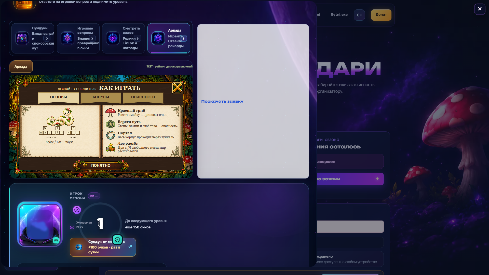
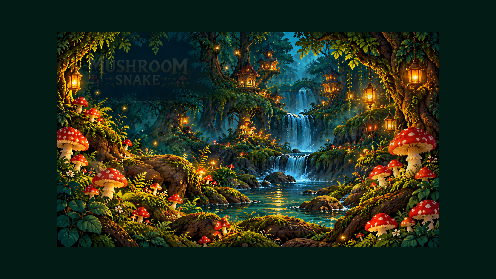
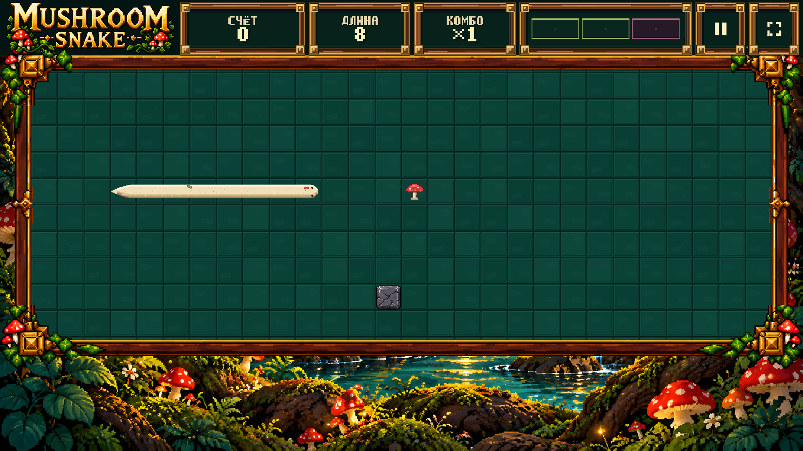
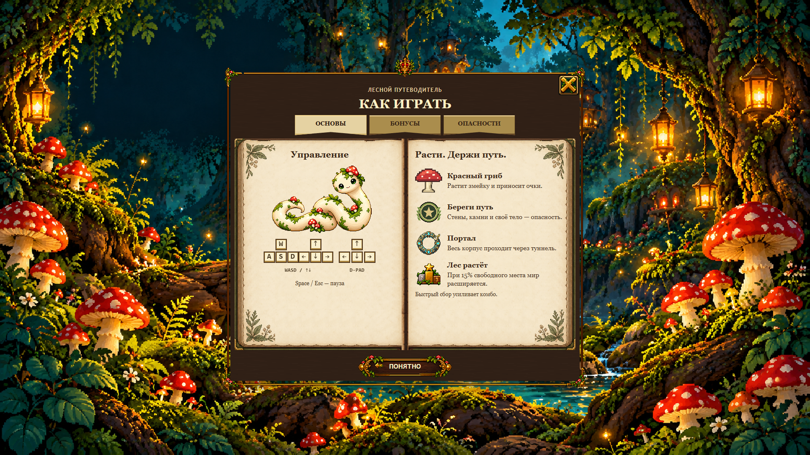
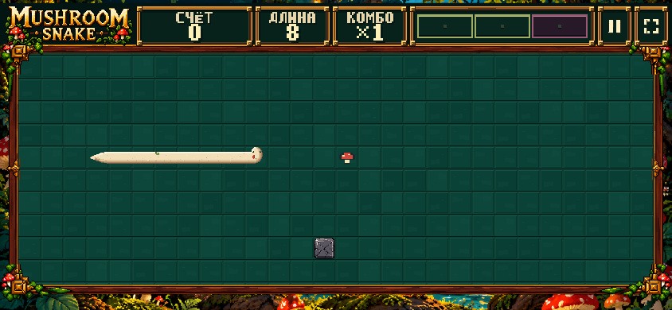

Mushroom Snake V4.2 — visual review
Guide: весь объект в viewport
BEFORE — реальный неизменяемый V4.1 runtime. AFTER — текущий источник. В книге прокручивается только содержимое страницы: края, закладки и ПОНЯТНО фиксированы.
Actual TEST host

Candidate: реальный embedded host Candidate: fullscreen host
Candidate: fullscreen hostMain / TOP-3 / TOP-10 — большие числа

Обычные значения
Один деревянный frame → grid
Никакой каменной/серой стены. Геометрия Snake, коллизии и миры сохранены. Fixed frame + square cells: legal interiors 28×10 / 38×14 / 48×18 имеют разные пропорции; неизбежный остаток ≤2.4% заполнен полом, а не вторым бордюром. Это явно отмеченные канонические paused fixtures, не live motion evidence.
Fullscreen · real TEST candidate

Настоящий текущий runtime внутри host, не отдельная mock-картинка
Нижние углы ×4
Удалён ступенчатый clip-path. За рамой canvas прозрачен; исходный forest backdrop, его масштаб и host radius не менялись.
LIVE после публикации
Снимки ниже появляются только после проверки опубликованного TEST без route overrides.

Guide fullscreen LIVE
Mobile gameplay LIVE Desktop gameplay LIVE
Desktop gameplay LIVE